Skip to main content
101 - Install and configure RasPBX
This guide will walk you through setting up the RasPBX, connecting to two virtual softphones, and placing a call between the two phones.
Items needed for this build
- Raspberry Pi (Not all Raspberry Pis are supported. Please check the documentation on the RasPBX Download page.)
- 8GB or larger microSD card
- RasPBX Image - RasPBX - Asterisk for Raspberry Pi Website
- Image writing software such as balenaEtcher - balenaEtcher Webpage
- 2 or more devices to run softphone software. These may be iOS, Android, Windows, or Linux devices.
Step 1 - Install RasPBX
-
Go to the RasPBX (Asterisk for Raspberry Pi) site and navigate to the downloads page.

-
Download the latest RasPBX image file (The latest version is 10-10-2020 as of 9 December 2020.)

-
Write the image to the microSD card using image writing software such as balenaEtcher. The steps and
images below are from balenaEtcher. If you use another imaging software application, the steps may be
different but the process is similar.
-
Click the "Flash from file" button to select the image file
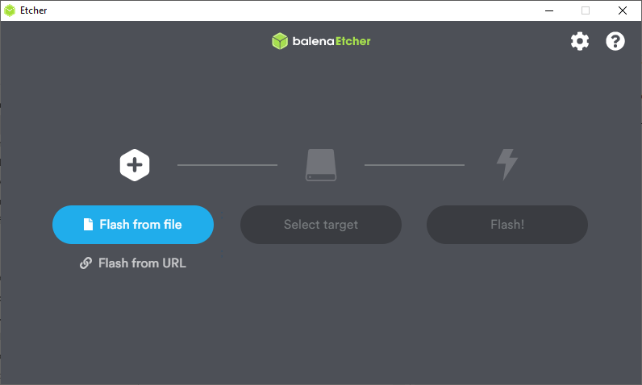
-
Select the zip file that you downloaded and click the "Open" button in the Open File Dialog window.
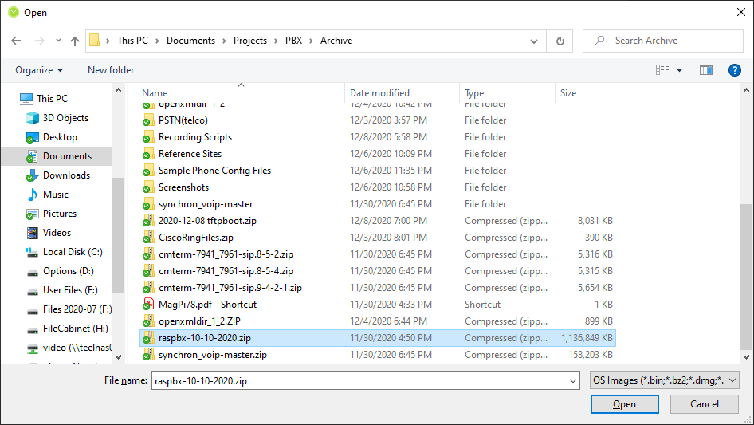
-
Click the "Select target" button

-
Select the microSD card from the list of devices and click the "Continue" button. Make certain that you are selecting the correct drive letter. balenaEtcher is nice in that
it provides warnings to you if the drive is a large drive, but it is your responsibility to select the correct drive. If you accidently
overwrite another drive, you will not be able to recover the data, so make certain you select the correct drive.

-
Click the "Flash!" button to write the image to the microSD card.

NOTE:If you see a User Account Control (UAC) dialog box, click the "Yes" button to continue.

-
Wait until the flash process completes. It will take several minutes. You will see the screens shown below.
NOTE: If you are prompted to format the disk at any time, do not format the disk! Click the cancel button on the dialog box.
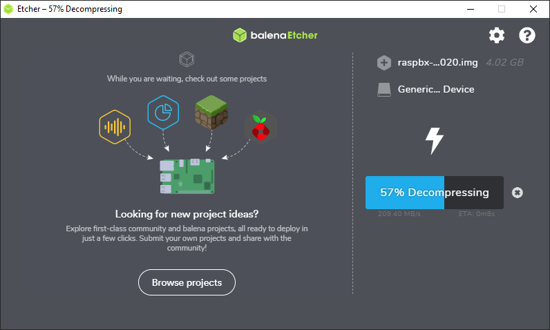
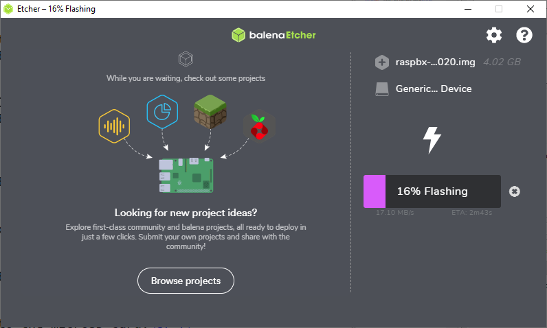
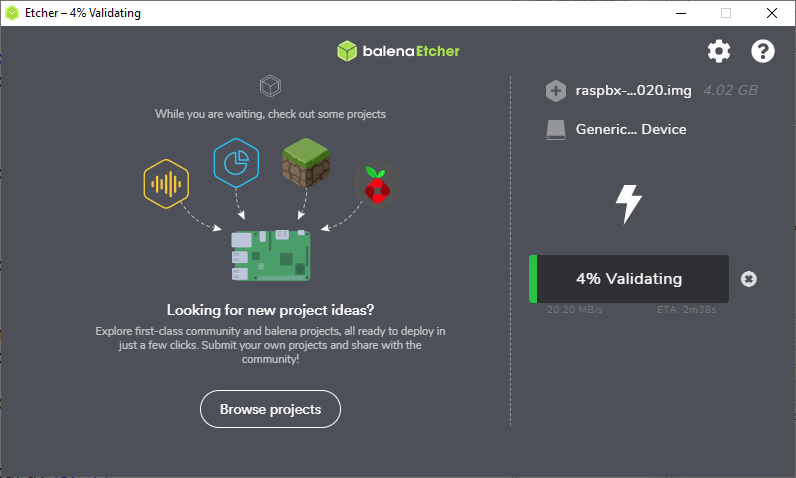
 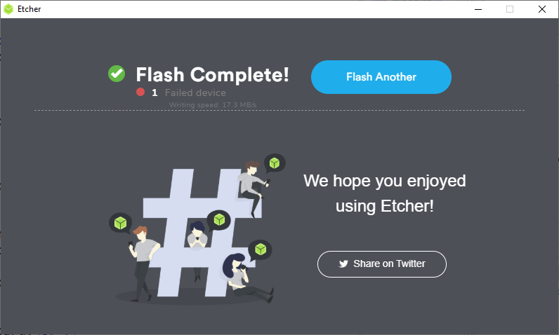
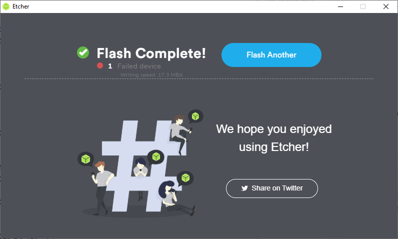
- Insert the microSD card in the Raspberry Pi and power it on.
Step 2 - Setup and configure RasPBX
-
When the Raspberry Pi boots and is prompting for a username and password, login with the default values.
Username: root
Password raspberry
-
Launch the Raspberry Pi Configuration application by typing the following at the prompt.
NOTE: Do not type the prompt "root@raspbx:~#". It is displayed for context only.
root@raspbx:~# raspi-config
-
Press tab to place the focus on the "<OK>" button and press Enter.
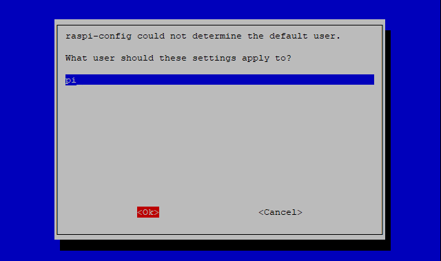
- (Optional) Enable SSH to allow administration from another PC using applications such as PuTTY and WinSCP.
-
Scroll down to option "5 Interface Options", press tab to place the focus on the "<Select>" button and press Enter.
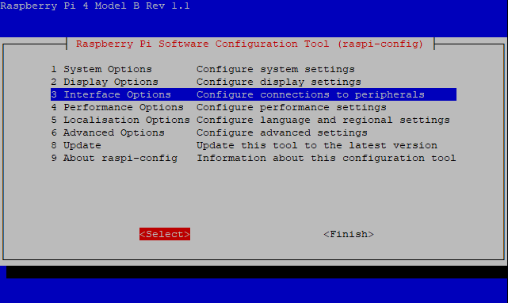
-
Scroll down to option "P2 SSH", press tab to place the focus on the "<Select>" button and press Enter.
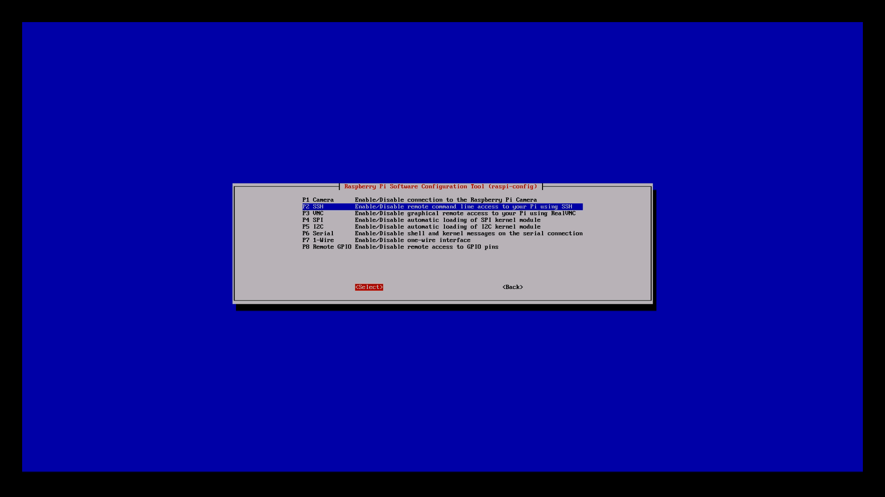
-
Make certain that the focus is on the "<Yes>" button and press Enter.
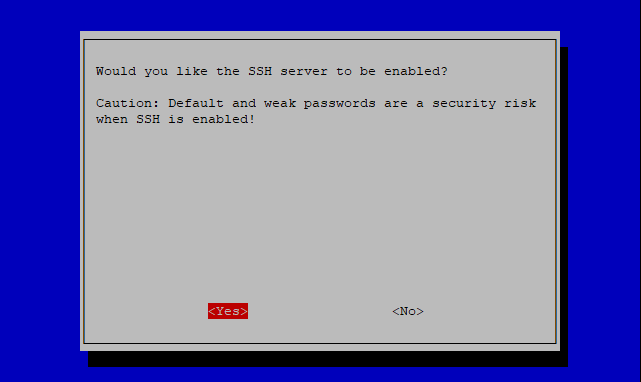
-
Make certain that the focus is on the "<Ok>" button and press Enter.
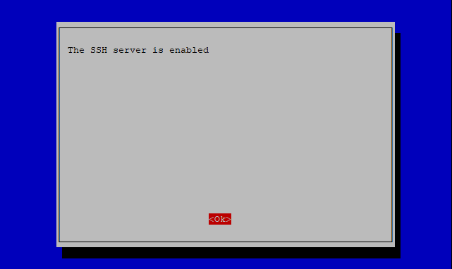
-
(Optional) Change Localization settings
If you are not located in the UK, it is a good idea to change options such as Timezone and Localization.
-
Timezone
-
Scroll down to option "4 Localization Options", press tab to place the focus on the "<Select>" button and press Enter.
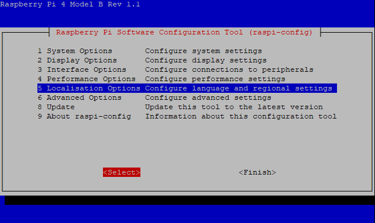
-
Timezone - Select the "L2 Timezone" option and set the values for your timezone.
The screenshots show the options for Eastern Standard Time (EST).
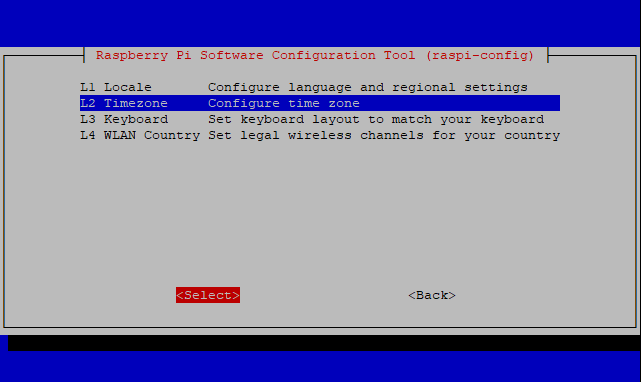
 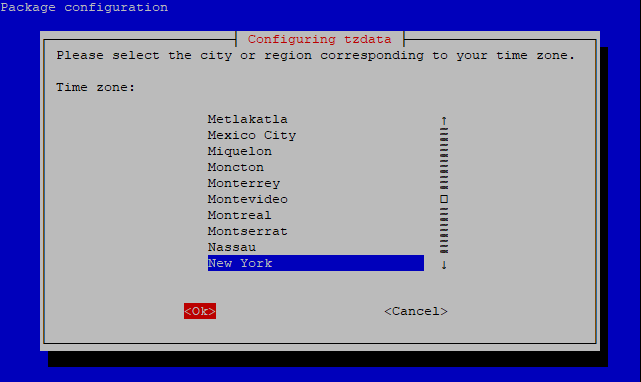
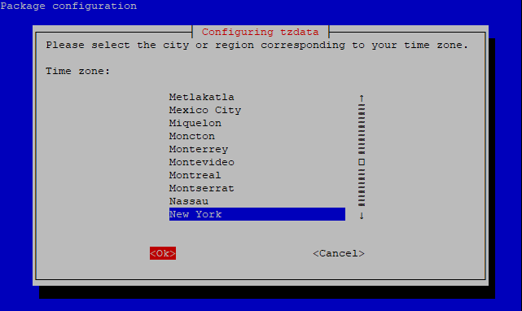
-
Scroll down to option "4 Localization Options", press tab to place the focus on the "<Select>" button and press Enter.
-
Keyboard - Select the "L3 Keyboard" option and set the values for your keyboard.
The screenshots show the options for US Standard Keyboard.
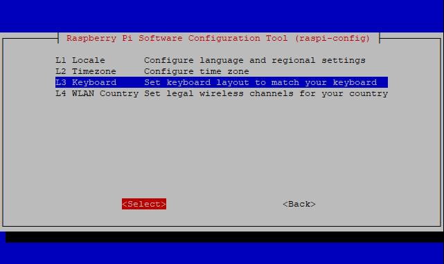
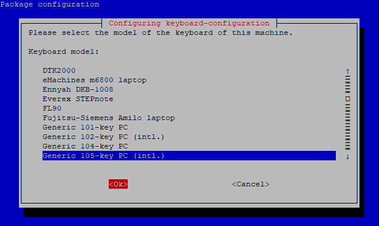
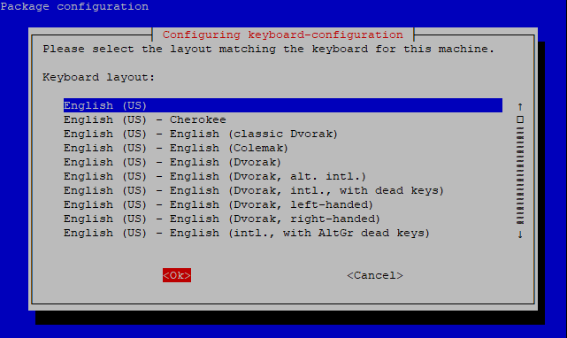
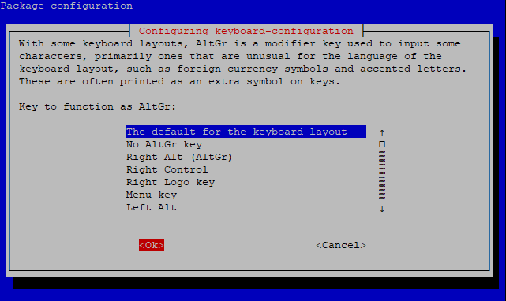
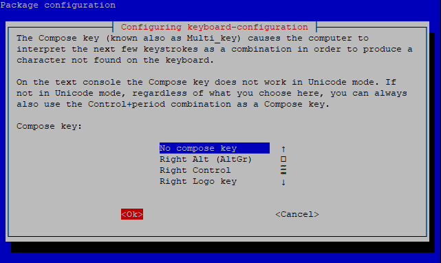
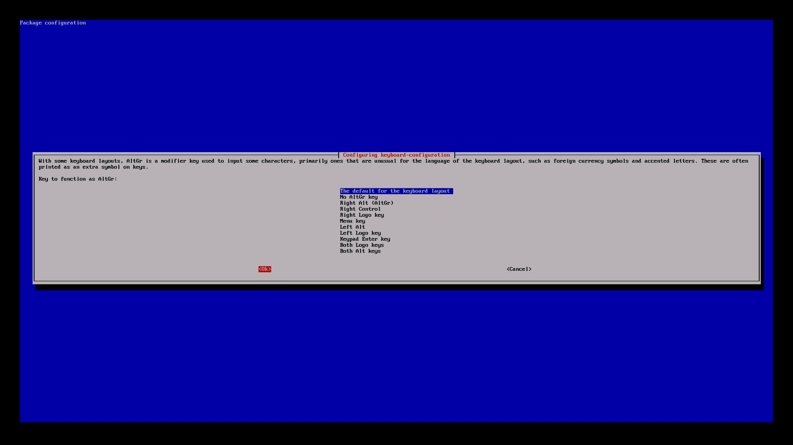
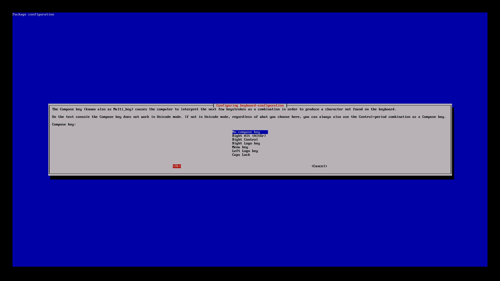
-
(Optional) Expand the File System
If your card is larger than 4GB, then you may want to expand the filesystem to be able to use all the space on the card.
-
Scroll down to option "6 Advanced Options", press tab to place the focus on the "<Select>" button and press Enter.
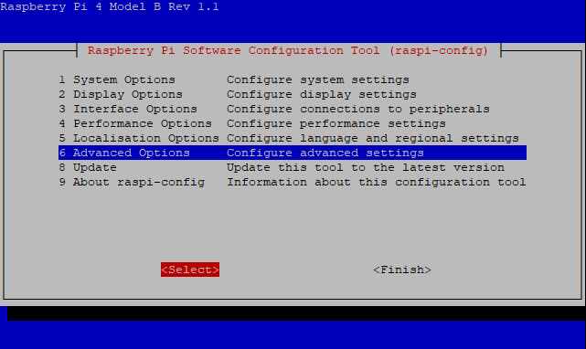
-
Scroll down to option "A1 Expand Filesystem", press tab to place the focus on the "<Select>" button and press Enter.
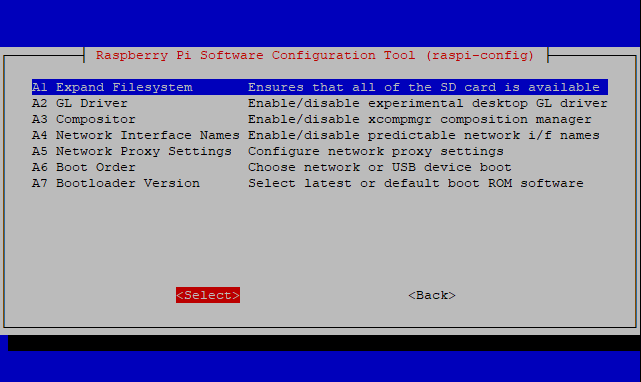
-
Make certain that the focus is on the "<Ok>" button and press Enter.
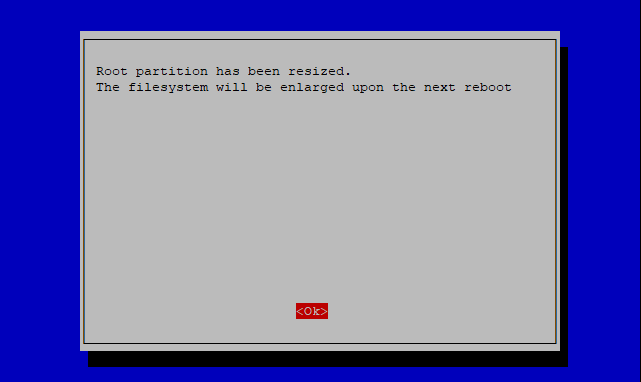
-
Tab to the <Finish> button and press the Enter key.

-
Tab to the <Yes> button and press the Enter key to reboot the Raspberry Pi.
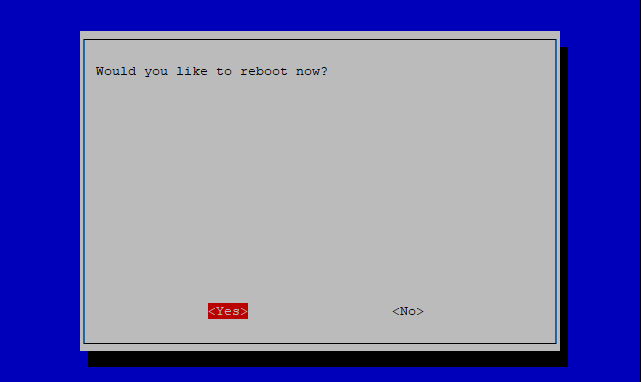
After the Raspberry Pi reboots, it is possible to administer the Raspberry Pi on another computer.
You may use PuTTY
to run commands and WinSCP
to transfer files between your PC and the Raspberry Pi.
You may be able to connect to the Raspberry Pi using raspbx.local but if that does not work, you will
need to find the IP Address for the Raspberry Pi. There are a few ways to find the IP Address. The most
straight forward way is to log into the Raspberry Pi and run the command "ifconfig" to obtain the IP
Address. Another method is to go to your router or DHCP server and look at the list of leases. Your
Raspberry Pi may be listed as "RASPBX". Note the IP Address and use it in PuTTY or WinSCP to connect
to the Raspberry Pi.
NOTE: It is suggested that you give your Raspberry Pi a static IP Address. There are several ways
to assign a static IP Address. You may setup the Raspberry Pi to use a static IP Address or you may
create a reservation on your DHCP server.
Step 3 - Add extensions to RasPBX for the softphones
-
Open a web browser and navigate to
http://raspbx.local/ or use the IP Address or your Raspberry Pi.
-
Click on the "FreePBX Administration" button
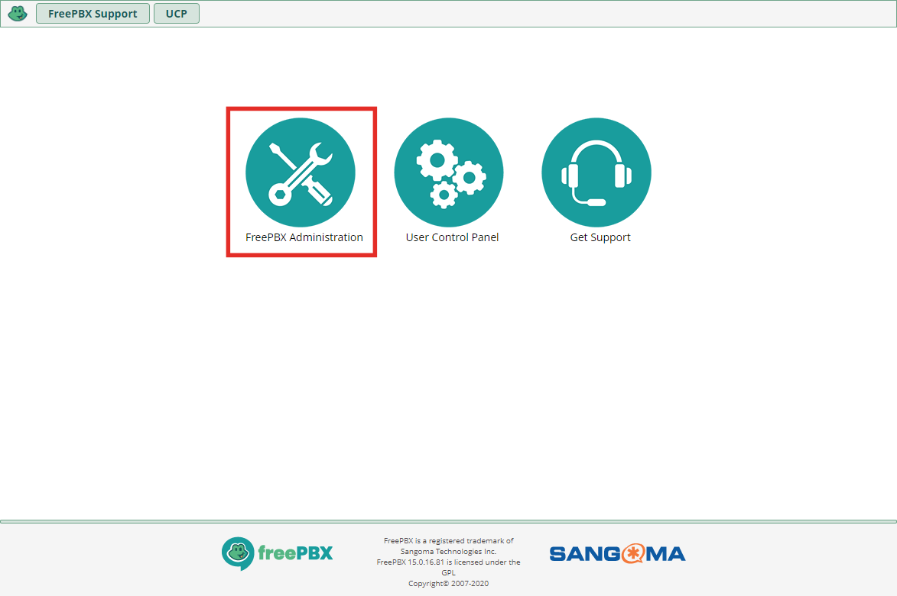
Step 4 - Install & provision softphones
Step 5 - Make a test call between softphones
Step 6 - Setup Voicemail